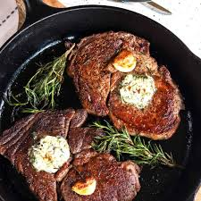

The Perfect Steak

So You Want To Make The Perfect Steak
Well then you've come to pretty decent place. I won't lie and say I have the best kept secrets in the
steak industry but I will say I do know how to make a damn good steak. The first part to a good steak is
a good cut of meat and I can tell you from experience, it's really easy to get. I'm not too picky about
my meat quality so I'll go to my local grocery store to get my steaks. The two cuts you typically want to
look for are a Ribeye steak or a New York Strip steak. Those two will
usually be the best bang for your buck but if you really want to swing for the fences and buy an extra
nice cut of steak you can buy a Filet Mignot and cook that the same way and it will be
delightful. Now lets crack into the craft and see what it takes to make a perfect steak!
What You Need
- Your Steak
- Salt | To Taste
- Butter | 2-4 tbs
- Garlic Cloves | 2-4
- Rosmary (or other aromatic)| 2-3 Spriggs
What to Know
-
For the steak, the thicker the better! Not only does it cook better, it's actually easier to cook right
than a thinner steak. Basically you get more time to cook the outside of the steak when it's thicker.
-
Seasoning wise, I like to stick with just plain old salt. The large grain sea salts are great or even
just the classic table salt. The reason being is some seasonings tend to burn and add unwanted flavor to
the steak.
-
The butter is used as a basting agent and is mixed with the garlic and the aromatics to give the steak
a little extra flavor as well as help cook the steak evenly.
-
For aromatics, Rosemary is the most popular but you can use many things like thyme,
oregeno leaves, or even cilantro leaves if you really wanted to! But I typically stick to rosemary
or thyme.
What To Do
- Pre-heat your oven to 350° f. That'a right we are going to use the oven a little bit!
-
Next we need to put a pan on medium-high heat and let it heat up nice and hot before we do anything
with it. The plan is to sear the outside of the steak and get a nice crust on the outside, and then
finish the cooking in the oven. Give the pan at least 5-10 minutes to fully heat up before you add your
steak to it.
-
While your pan is heating up, you need to get your garlic cloves and aromatics ready. Just make sure they
are ready to go because once the steak goes in the pan it all goes pretty quickly.
-
Once everything is ready you can pat your steak dry, this step is crucial in the seasoning process, and
then season your steak. Make sure you get both sides and all around the edges for the best steak possible!
-
Go ahead and put the steak directly into the pan for 1-3 minutes per side and if the pan is nice and hot
it'll be sizzling like crazy! Now remember, in the pan we are just trying to get a nice sear on all
sides, including the edges.The final cooking process to determine how "done" your steak is more in the
oven. So with this in mind don't worry about cooking the steak, just focus on getting a nice crust.
-
Don't forget to pick up your steak and cook it on its side for ~30 seconds on all sides. This is called
"rendering the fat" and will cook some of the fat on the edges of the steak (especially
the New York Strip) and add tons of flavor the the steak!
-
Once you've got a nice sear and you've rendered the fat, you can remove it from the heat and add your
butter, along with your garlic and aromatics. I like to put the butter, garlic, and aromatics all in one
spot in the pan,
-
This is where it gets a little difficult. Once you got everything in the pan you can go ahead and put it
all directly into the oven for 30-45 seconds. Then flip the steak and leave it in the oven for
another 30-45 seconds. For a rare steak I wouldn't flip it but for a more medium steak I'd flip it at
least 1 or 2 times. The overall time in the oven shouldn't be any more than 2-3 minutes but I'd stick to
the lower side for a perfect medium steak.
-
Now you can remove the pan from the oven and start basting your steak with the butter. I like to use a
spoon and get the garlic and aromatics on top of the steak and then start pouring the butter all over the
steaks. If you don't really have enough butter to baste over top of the steak you can add some butter but
you need to be quick as the steaks are still cooking a little bit while in the hot pan.
-
Once you've coated the steaks in a nice garlicy butter bath you need to remove them from the pan and let
them rest for an additional 5 minutes so that the steaks can finish cooking and all the flavors settle.
-
If all went well that should only be a 10-15 minute process, probably even less once you get the hang of
it. But all that's left is to cut into your steak and take a perfect bite of the perfect steak.